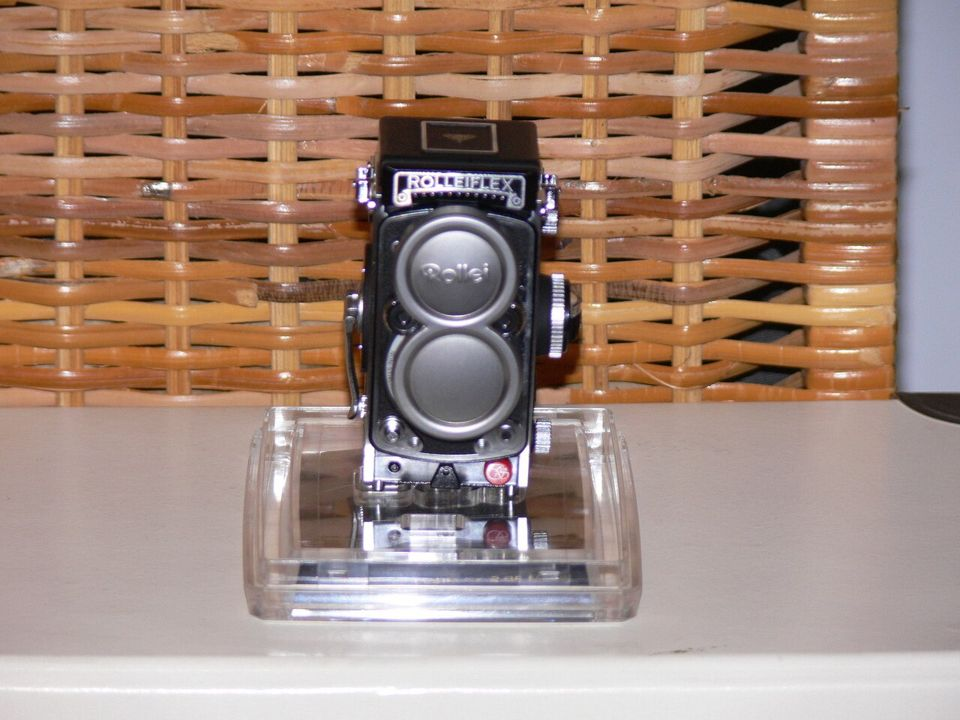
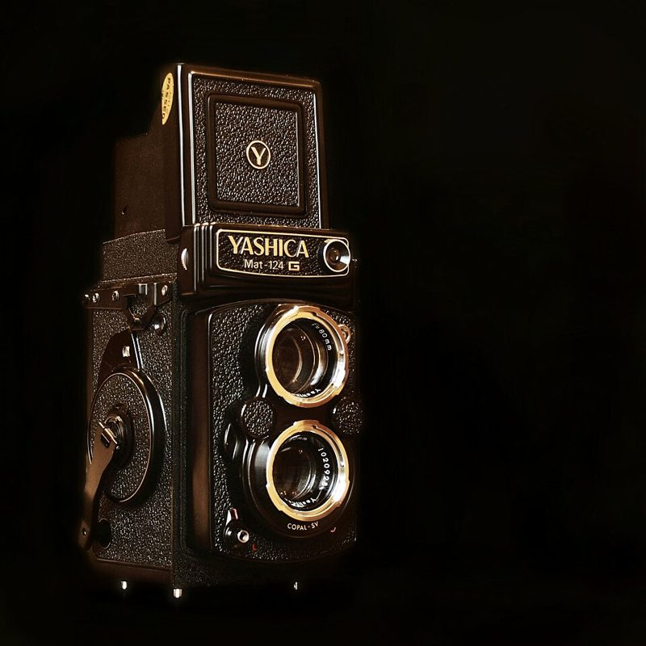
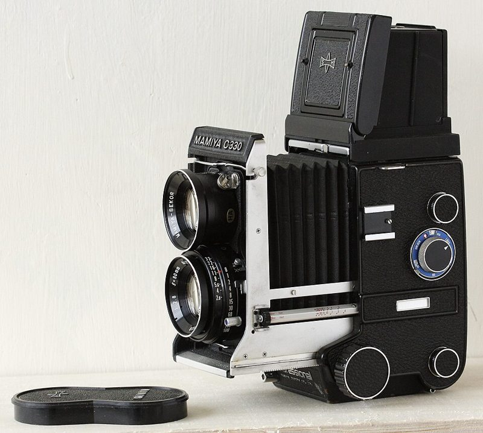

이안반사 TLR · 120
렌즈 두 개가 위아래로. 위는 보는 용, 아래는 찍는 용. 허리 높이에서 내려다보며 찍습니다.



어떻게 찍히나요
위 렌즈는 보는 용, 아래 렌즈는 찍는 용입니다. 위에서 들어온 상이 거울에 반사되어 카메라 윗면의 젖빛 유리에 맺히고, 허리 높이에서 내려다보며 구도를 잡습니다. 120 필름에 6×6 정사각형으로 12장이 찍힙니다.
이런 분께 추천
- 중형 필름을 처음 시작하는 분
- 정사각형 인물·풍경을 좋아하는 분
- 피사체와 눈을 맞추지 않고 편하게 찍고 싶은 분
좋은 점과 아쉬운 점
- 좋은 점
- 6×6 정사각, 중형치고 저렴한 입문
- 아쉬운 점
- 좌우 반전된 상, 근접 시 시차
대표 기종
Rolleiflex 2.8F · Yashica Mat-124G · Mamiya C330
대략적인 가격
40만 ~ 250만 원
어울리는 필름
중고로 살 때 확인할 것
- 초점 노브를 돌릴 때 두 렌즈가 함께 부드럽게 움직이는지
- 윗면 유리 화면이 너무 어둡지 않은지
- 필름 카운터가 12장에서 정확히 멈추는지